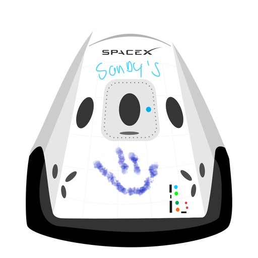

Hyperblog
Tu blog de confianza
Este es el titulo atractivo e intersante del post
Y este el párrafo de inicio donde vamos a explicar cosas increíbles que se pueden hacer con las ramas

Los blogs son la mejor forma de compartir información tus ideas mucho más que ir a conferencias o salir en Youtube. Excepto si eres un rockstar. Pero estadísticamente no lo eres... por ahora
Suscríbete y dale like